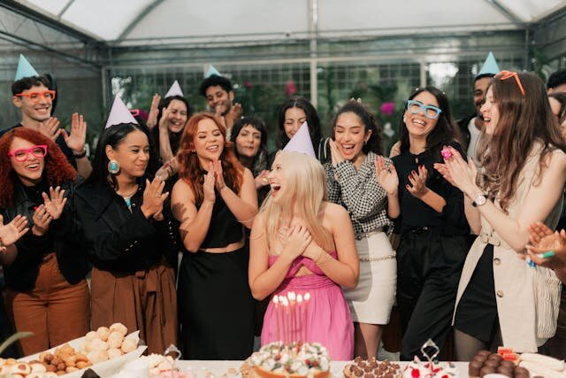

数学・論理
365日もあるのに、なぜこんなに少ない人数で一致するのか——1939年に提起された問いが、私たちの直感の限界を暴く。
オーストリアの数学者リヒャルト・フォン・ミーゼスが、誕生日の一致に関する確率問題を初めて論文として発表。
同年の世界：第二次世界大戦が勃発。ドイツがポーランドに侵攻し、英仏が宣戦布告。ニューヨーク万博が開催され、テレビ放送が始まった年でもある。
名前の由来：数学的には正しい結果なのに、直感に反するため「パラドックス（逆説）」と呼ばれる。正確には「パラドックス」ではなく、反直感的な真実である。
新学期の教室で、担任が「この中に同じ誕生日の人がいるかもしれない」と言い出したことはないだろうか。30人もいない教室で、365日もあるのだから、まさかと思う。ところが名簿を読み上げていくと、本当に一致するペアが見つかる。偶然の一致に教室がざわめいた、あの感覚。
似たような驚きは日常のあちこちにある。同僚と誕生日が同じだった、飲み会で隣の人と誕生月が一緒だった。「世の中って狭い」と笑い合うけれど、本当にそれは偶然なのか、それとも偶然ではないのか——区別がつかない。
これは偶然ではない。23人集まれば、誕生日が一致するペアがいる確率は50%を超える。直感が「ありえない」と言うことを、数学は淡々と証明する。
人間の直感が確率をどれだけ見誤るかを、自分の予測とシミュレーション結果のギャップとして体験する。人数を増やしたとき、「ペアの数」がどう爆発するかを目で見る場面がある。
1930年代のイスタンブール。オーストリアから亡命した数学者リヒャルト・フォン・ミーゼスRichard von Mises（1883–1953）
オーストリア出身の数学者・物理学者。確率論の頻度主義的解釈の提唱者。ナチス台頭後、トルコ経由でアメリカに亡命。兄は経済学者ルートヴィヒ・フォン・ミーゼス。は、ある集まりで不思議な偶然に出くわした。60人ほどのパーティーで、同じ誕生日の人が3人もいたのだ。「これは珍しいことなのか、それとも当たり前のことなのか」——その問いを、フォン・ミーゼスは数学で解くことにした。
1939年、彼はイスタンブール大学の紀要に論文を発表する。タイトルは「配分と占有の確率について」。その中で彼は、n人の集団における誕生日の一致の期待値を計算した。答えは衝撃的だった。たった23人で、少なくとも1組の誕生日一致がある確率は50%を超える。365日もあるのに、たったの23人。
リヒャルト・フォン・ミーゼス
Richard von Mises, 1883–1953
オーストリア生まれの応用数学者。確率論における頻度主義の立場を体系化した。ナチスの台頭によりベルリン大学を追われ、イスタンブール大学を経て1939年にハーバード大学へ移った。亡命先で書いたこの論文が、誕生日のパラドックスの出発点になった。
ただし、フォン・ミーゼスが扱ったのは「一致ペアの期待値」であり、今日よく知られる「何人で50%を超えるか」という形の問題そのものではなかった。そちらは、イギリスの数学者ハロルド・ダヴェンポートHarold Davenport（1907–1969）
イギリスの数学者。数論の分野で重要な業績を残した。誕生日問題の着想者と見なされているが、本人は「自分が最初だとは信じられない」として公式には発表しなかった。が1927年頃にすでに着想していたとされる。ダヴェンポートは公式には発表しなかった。「こんな単純なことを、誰も先に言っていないはずがない」と思ったからだ。
"Davenport did not claim to be its discoverer because he could not believe that it had not been stated earlier."
「ダヴェンポートはこの問題の発見者を自称しなかった。こんなことが以前に述べられていないとは信じられなかったからだ。」
— David Singmaster, Chronology of Recreational Mathematics
こうして、着想はダヴェンポートに遡り、最初の出版はフォン・ミーゼスに帰せられる。その後、確率論の大家ウィリアム・フェラーWilliam Feller（1906–1970）
クロアチア出身の数学者。著書『確率論とその応用』は確率論の教科書として20世紀で最も影響力があったとされる。が1957年の教科書『確率論とその応用』で取り上げたことで、この問題は世界中の教室に広まった。
何人集まれば、同じ誕生日のペアが見つかるか（イメージ）
✗ よくある誤解
50%の確率に達するには、少なくとも183人（365の半分）必要だろう
✓ 実際は
必要なのはたった23人。183人は「特定の1人と同じ誕生日の人がいる確率」の話と混同している
✗ よくある誤解
数学が得意な人なら直感で正しく推測できる
✓ 実際は
研究によれば、数学に通じた人でもこの問題で大幅に過大推測する傾向がある。知識と直感は別物だ
✗ よくある誤解
誕生日が均等に分布していないから、現実では成り立たない
✓ 実際は
誕生日の分布が不均等であるほど、一致の確率はむしろ上がる。均等分布は確率が最も低くなる条件だ
まず試してほしい。23人の集団で、少なくとも1組の誕生日一致がある確率は何%だと思うか。スライダーを動かして答えてみてほしい。正解を知ってから「当たり前でしょ」と思うのは簡単だ。その前に、自分の直感を記録しておくことに意味がある。
23人が1つの部屋に集まっています。少なくとも2人が同じ誕生日である確率は何%だと思いますか？
では、70人に増やしたら？ 確率は何%になると思いますか？
ほとんどの人が大幅に低く見積もる。これは知能や数学力の問題ではない。人間の脳は、ペアの組み合わせが爆発的に増えることを想像するのが苦手なのだ。次のシミュレーターで、それを目撃してほしい。
予測と実際のギャップに驚いた人は多いだろう。だが、なぜそうなるのかは、まだ「感覚として」わかっていないはずだ。次のシミュレーターでは、ランダムに誕生日を生成して1000回シミュレーションを回す。理論値に結果が収束していくさまを、自分の目で確認できる。
人数を選び、「1000回シミュレーション」を押してください。ランダムに誕生日を割り当て、一致があったかどうかを1000回繰り返します。
人数スライダーを変えて比較してみてください。10人、23人、50人、70人——確率の立ち上がりの速さに注目。
直感は「ありえない」と言う。
シミュレーションは「当たり前だ」と答える。
— 誕生日のパラドックスの核心
直感がなぜ外れるのか。答えは「比較の数」にある。23人の部屋で、ある特定の1人（たとえばあなた）と誕生日が同じ人がいる確率は確かに低い。22/365で、約6%だ。直感が「低い」と感じるのは、この計算をしているからだ。
だが問題は「あなたと誰か」ではない。「誰かと誰か」だ。23人のうち、ペアになりうる組み合わせの数は23×22÷2＝253通り。あなたが関わるペアは22通りしかないが、あなた以外のペア同士の組み合わせが231通りもある。私たちはこの「自分が含まれないペア」を本能的に無視する。
ボタンを何度か押してみてほしい。人が1人増えるたびに、その人は既存の全員と線で結ばれる。5人で10本、10人で45本。そして23人で253本だ。線の本数は人数の二乗に比例して増えていく。ここに直感の罠がある。
直感が外れる3つの理由
「自分の誕生日と同じ人がいるか」で考えるとき、確率は低い（22/365 ≈ 6%）。だが問題が問うているのは「23人の中のどのペアでも一致すればよい」ということだ。自分が関わらないペアの方がはるかに多い。家電を買うとき、自分のレビューだけ見て「全体の評価」を判断するようなものだ。
人数が1人増えるとペア数は「今の人数ぶん」増える。5人目が入ると4本、6人目で5本、23人目で22本。これが積み重なり、合計 n(n-1)/2 になる。人数は線形に増えるが、ペア数は二次関数的に増える。SNSの友達が倍になると、タイムラインの情報量が4倍になるのと同じ構造だ。
「一致がある確率」を直接計算するのは難しい。1組だけ一致するケース、2組一致するケース……を全部足す必要がある。数学者が使うのは裏技で、「全員がバラバラである確率」を計算して、それを1から引く。2人目が1人目と違う確率は 364/365。3人目が1・2人目と違う確率は 363/365。これを掛け続けると、23人目で積が0.493を下回る。つまり、全員バラバラの方が珍しくなる。
人数と誕生日一致確率の関係。23人で50%、57人で99%に達する。
誕生日問題の主要な展開 関連する出来事
1927年頃
ダヴェンポートの着想
イギリスの数学者ハロルド・ダヴェンポートが、マンチェスター大学の学部生時代に「何人で50%を超えるか」という形の問題を考案。ただし公式には発表しなかった。
1939年
フォン・ミーゼスの論文発表
リヒャルト・フォン・ミーゼスがイスタンブール大学の紀要に論文を発表。誕生日の一致ペアの期待値を数学的に解析した、この問題に関する最初の学術的出版物。
1939年（同年）
Ball-Coxeter版の出版
数学の娯楽書『Mathematical Recreations and Essays』第11版（コクセター編集）が、ダヴェンポート版の誕生日問題を初めて活字にした。
1957年
フェラーの教科書
ウィリアム・フェラーの名著『確率論とその応用 第1巻』が誕生日問題を取り上げ、世界中の確率論の授業で教材として定着する。
1970年代〜
暗号学への応用（バースデーアタック）
誕生日問題の数学がハッシュ関数の安全性評価に転用される。「バースデーアタック」と呼ばれる攻撃手法は、ハッシュ値の衝突を予想より少ない試行で見つけられることを利用する。
2004年
MD5の衝突が実証される
王小雲らの研究チームが、広く使われていたハッシュ関数MD5の衝突を一般的なコンピューターで実演。この突破は誕生日のパラドックスの数学に基づいており、MD5の廃止を加速させた。
2014年
FIFAワールドカップでの検証
2014年ブラジル大会では各チーム23人登録。BBCが全32チームを調べたところ、ちょうど半数の16チームに誕生日が一致するペアがあった。理論値の50%にぴたりと一致した実例として広く報じられた。
誕生日のパラドックスが教えているのは、特定の問題の解き方ではない。私たちの直感が組み合わせの爆発を過小評価するという、もっと普遍的な話だ。
同窓会で「同じ映画を先週観ていた」人がいると驚く。会社の歓迎会で「出身地が同じ」人がいると運命を感じる。だが、20人の集まりで「共通点が何もない」方がはるかに珍しい。比較するペアの数は190通りあり、共通点の種類（誕生月、出身県、好きな映画……）は無数にある。「驚くべき偶然」は、ペアと属性の掛け算で必然に変わる。
"It is not so much that the birthday paradox is astonishing — it is that our intuition about probability is astonishingly poor."
「誕生日のパラドックスが驚くべきなのではない。確率に対する私たちの直感が、驚くほど貧弱なのだ。」
— Persi Diaconis & Frederick Mosteller, "Methods for Studying Coincidences" (1989)
暗号の世界では、この直感の甘さが致命的になる。ハッシュ関数の設計者が「128ビットの出力なら衝突は事実上起こらない」と思っていても、バースデーアタックはその半分の64ビット相当の試行数で衝突を見つけてしまう。2004年にMD5が破られたのは、この数学を過小評価した結果だ。
では、日常で私たちにできることはあるだろうか。いくつかの手がかりはある。ひとつは、フェルミ推定フェルミ推定（Fermi estimation）
おおまかな見積もりを桁数レベルで素早く行う手法。正確な答えを求めるのではなく、「桁が合っているか」を確かめるのに有用。的に「比較対象はいくつあるか」を先に数えることだ。20人の集まりならペアは190組。その数を頭に置くだけで、「偶然の一致」に対する驚きの閾値が変わる。もうひとつは、基準率基準率（base rate）
ある事象が「何もしなくても」起こる確率。特定の条件をつけずに計算した、ベースラインとしての確率のこと。を意識すること。「その偶然が起きる確率」だけでなく、「その偶然が起きない確率」を裏返して考える。23人で全員バラバラである確率はたった49.3%——半分を切っている。偶然に驚く前に、裏側の数字を見る習慣だ。
だが正直に言えば、こうした対策は万能ではない。知っていても直感は変わらない。フォン・ミーゼスも、フェラーも、この問題を解いた数学者たちでさえ、最初は驚いたのだ。知識で直感は上書きできない。できるのは、「自分の直感は確率を見誤る」と知っておくことだけだ。それだけで、驚くべき偶然に出会ったとき、一拍置いて考える余裕が生まれる。
FIFAワールドカップと23人の奇跡
FIFAワールドカップの登録選手は各チーム23人。これが誕生日のパラドックスの検証に完璧なデータセットとなった。2014年ブラジル大会では32チーム中16チーム（ちょうど50%）に誕生日一致ペアがあり、数学者ペーター・フランクルは「私は講義で誕生日パラドックスを20回ほど試したが、外れたのは1回だけだ」と述べた。

パーティーに20人以上が集まれば、同じ誕生日のペアがいる確率は50%を超える（イメージ）
Über Aufteilungs- und Besetzungswahrscheinlichkeiten
すべてはここから始まった。フォン・ミーゼスがイスタンブール大学の紀要に発表した、誕生日の一致に関する確率解析の原論文。パーティーでの体験が数学になった瞬間を読める。Selected Papers版からアクセス可能。
An Introduction to Probability Theory and Its Applications, Vol. 1
確率論の教科書の決定版。誕生日問題がここで取り上げられたことで、世界中の教室に広まった。第1巻第2章に登場する。確率を「感覚」で学びたい人にも読みやすい。
Methods for Studying Coincidences
「偶然の一致」を数学的に分析するための枠組みを提示した論文。誕生日問題を一般化した議論が含まれ、なぜ私たちが偶然に驚きすぎるのかを体系的に論じている。読んだ後、「すごい偶然」に鈍感になる。
The matching, birthday and the strong birthday problem: a contemporary review
誕生日問題とその拡張を包括的にレビューした論文。「全員が誰かとペアになる確率（強い誕生日問題）」など、さらに深い問いに踏み込んでいる。指紋照合や暗号学への応用も議論。